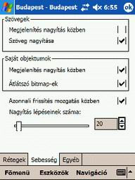
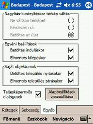
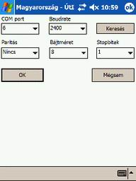

Magyar
ország térképének megjelenési és sebességi jellemzõi állíthatók be, a „Rétegek”,
„Sebesség”, „Egyéb”
füleken A fülek egyesével választható ki, és attól függõen, hogy melyik
aktív, változik a párbeszédablak tartalma
A
számítógépen megjelenített térképeket úgynevezett térképi rétegekre bontják,
mely rétegek együttes megjelenése adja vizuális élményt. A rétegek ki- és
bekapcsolhatók, amelynek az a jelentõsége, hogy a felhasználó számára fontos
elemei jelennek a térképnek egyszerre csak meg, elkerülendõ a képernyõ túlzsúfolását,
és a térkép áttekinthetetlenségét.
A
térképek nagyításával és kicsinyítésével indokolt lehet az egyes rétegek ki-
vagy bekapcsolása, de az is lehetséges, hogy bizonyos rétegekre a felhasználó
egyáltalán nem kíváncsi.
A „Rétegek” fül bekapcsolásával megjelenik a képernyõn látható térkép rétegszerkezete. A listában az egyes térképi rétegek elnevezései, valamint az hogy látható e az adott réteg a programban. A réteg láthatóságát úgy lehet kikapcsolni, hogy az adott réteg sorába a láthatóság oszlopra rákattint egyszer.
Kiválasztva
a listából egy réteget, annak paraméterei véltoztathatóak a „Módosítás”gombot
kiválasztva.
Az "Elnyomás" sorban azt lehet beállítani, hogy ha az adot réteg objektumai egy nagyítási szinten már túl kicsik lennének (már nem lehet látni) akkor a program nem jeleníti meg. Ha a paraméter értéke "0", réteget akkor is betölti a program ha annak objektumai gyakorlatilag nem látszódnak. Ha a paraméter értéke "100", akkor a program a legnagyobb objektumokat is eltünteti.
Az
„Alapbeállítások” gombra kattintva
a térképek eredeti beállításai állnak vissza.
Ezt
a fület kiválasztva, olyan paramétereket lehet átállítani, melyek a térkép
kezelésének sebességét nagymértékben befolyásolják.

„Szöveg megjelenítése nagyítás közben”
bekapcsolásával a térképen látható szövegek a térkép nagyítása vagy kicsinyítése
alatt is folyamatosan láthatóak a képernyõn. Kikapcsolásával a szövegek csak
a nagyítás vagy kicsinyítés befejeztével jelennek meg.
„Szöveg
nagyítása” bekapcsolásával
a térképen látható szövegek a térkép nagyításával vagy kicsinyítésével együtt
változtatják méretüket. Kikapcsolásával a szövegek mindig ugyanabban a méretben
láthatóak a képernyõn. A szövegek nagyításnak kikapcsolásával együtt célszerû
úgy módosítani az egyes rétegeken lévõ szövegek nagyítástól függõ megjelenését
a „Rétegek” fülön,
hogy a szövegek csak nagyobb nagyításnál váljanak láthatóvá, különben eltakarhatják
a térkép részleteit.
„Saját objektumok megjelenítése nagyítás
közben” bekapcsolásával a térképen látható saját objektumok a
térkép nagyítása vagy kicsinyítése alatt is folyamatosan láthatóak a képernyõn.
Kikapcsolásával a saját objektumok csak a nagyítás vagy kicsinyítés befejeztével
jelennek meg.
„Átlátszó bitmapek” bekapcsolásával, a programba objektumként kihelyezhetõ
képek kerete átlátszó lesz.
„Azonnali frissítés mozgatás közben” bekapcsolásával a térkép folyamatosan
kitölti a képernyõt azalatt is, amíg mozgatja, kikapcsolt
állapotában azonban a mozgatás alatt a képernyõ egy része üres marad addig,
amíg a mozgatást be nem fejezi.
„Nagyítás lépéseinek száma” ez a szám azt adja meg, hogy a program
hány lépésben nagyítsa fel a térképet a legkisebb felbontásról a legnagyobbra.
A lépésszám növelésével finomodik a nagyítás, azonban le is lassul ettõl a
nagyítás folyamata.
A
módosítások elfogadása a képernyõ jobb felsõ sarkában lévõ „OK” nyomógombra való kattintással
tehetõ meg.
Az „Egyéb”
fülön olyan beállítások találhatók, melyek az egész programra vonatkoznak.

Nagyítás-kicsinyítéskor térkép váltás ebben az ablakban a program csak a „Betöltse az újat” fül kiválasztásával
mûködik.
A
„Betöltse az újat” kiválasztásával,
ha folyamatosan nagyít Magyarország, vagy folyamatosan kicsinyít bármely település
térképén, a program automatikusan átvált a fókuszában lévõ település térképére,
illetve visszavált Magyarország térképére.
Az "Egyéni beállítások"
- A „Betöltés induláskor”
kiválasztásával a beállítások párbeszédablakban történt módosításokat
induláskor automatikusan betölti a program.
- Az „Elmentés kilépéskor”
kiválasztásával a beállítások párbeszédablakban történt módosításokat kilépéskor
automatikusan elmenti a program.
A "Saját objektumok"
- A „Betöltés
település nyitásakor” kiválasztásával a településre elõzõleg felvett
objektumaink a település nyitásakor automatikusan betöltõdnek.
- Az „Elmentés település
zárásakor” kiválasztásával a településre elõzõleg felvett objektumaink
a település bezárásakor automatikusan mentésre kerülnek.
Ammenyiben a "Teljes képernyõs dialógusok " mellette lévõ négyzet ki van jelölve, akkor a párbeszédablakok
maximális méretben lesznek láthatóak.
"Alapbeállítások visszaállítása" funkciót kiválasztva, az elõre beállított értékek állnak
vissza.
Az
ikont kiválasztva a PDA-hoz illesztet GPS vevõ, tulajdonságai állíthatók be.

"Keresés": Ez a funkció megkeresi a PDA soros portjait, és azt hogy
melyiken milyen sebességû GPS vevõ van. Amennyiben talál GPS vevõt, akkor
annak paramétereit be is állítja(pl: COM port 7,
Baudrate 4800).
Figyelem!
"COM port": Itt választhatja ki, hogy a PDA melyik soros portján van
a GPS vevõ.
"Baudrate": A kommunikáció sebességét választhatja ki. Ennek az érték
meg kell egyeznie, a GPS vevõ sebességi adatával. Bluetooth-s vevõ esetén
a Baudrate értéket feljebb lehet emelni.
Figyelem! A GPS vevõk
nagy többsége nem tud
sebesség-korrekciót nyújtani, ezért a pozíciók kb. két-három másodpercet késnek!
Az
ikont kiválasztva a kijelölt útvonaltól való eltérésének paraméterei állíthatóak
be.
Az
alap beállítások az átlagos GPS vevõ értékeinek megfelelõek.
Jobb minõségû vevõ esetén az értékeket csökkenteni lehet, rosszabb minõségû
esetében ajánlott növelni ezeket az értékeket.
"Méter": A kijelölt útvonaltól való maximális távolsági eltérést állíthatja be.
Ha ez értéknél nagyobb az eltérés a program figyelmezteti Önt a „Navigációs
adatok” ablakban, és hanggal.
"Automatikus újratervezés": Ha a négyzet nincs kijelölve, akkor a program csak figyelmezteti
az útvonaltól való eltérés esetében, az új útvonalat csak kézzel tervezheti
meg. Ha azonban a kipipálás megtörtént, a program néhány másodperc alatt újra
tervezi útvonalát.
"MÁSODPERC rossz irányba": Ebben az ablakban, egy konkrét hiba és az arra adott
válasz közötti idõtartamot állíthatja be. Ez a funkció azért szükséges, mert
a GPS vevõk elég sokszor elveszthetik egy-egy másodpercre a mûholdakat (pl.
hidak esetében) ilyenkor azonban nem szükséges a beavatkozás.
"Teljes
képernyõ": Ez a funkció
a külön beállított eszköztáron és segéd ablakon kívül mindent kikapcsol a
képernyõn (fejléc, menüsor stb.) és a térkép a lehetõ legnagyobb képméretet
használja a képernyõn. A teljes képernyõ megszüntetése a térkép bal felsõ
sarkában megjelenõ „X”-re kattintva lehetséges.
"Nyomkövetési adatok": Ha a négyzetre kattintva a pipát behelyezi, egy segéd ablak jelenik meg, a képernyõ alján, ahol a GPS vevõ és a navigáció pillanatnyi állását követheti nyomon, Részletes leírás a "Navigációs adatok, "GPS adatok" fejezetben.
Az ikont kiválasztva a különbözõ útfajták jellemzõit állíthatjuk be.
Az
ikont kiválasztva a kijelölt útvonaltól való eltérésének paraméterei állíthatóak
be, akár
Amennyiben a „Keresés
távolságra” funkció van kijelölve, program kilométerben a legrövidebb
utat fogja választani, ha a különbözõ útfajták „Preferencia” skálája középre vannak állítva. Ilyenkor
az útszakaszok hosszát egyszeres szorzóval veszi figyelembe a program.
Ha alapvetõen fõutakon közlekedik akkor
tolja el az adott útfajta preferencia skáláját a „fontos” irányba.
Ha
az „Idõ” funkció van
kijelölve, akkor a program az idõben legrövidebb utat fogja választani. A
megtett idõt a program, a „Sebesség”
oszlopba megadott sebességi értékek, és az útvonalszakaszok hosszából
számolja ki. Ebben az esetben az útfajták súlyozását, a sebességi értékek
módosításával lehet elvégezni.
Az ikon a programból való kilépést szolgálja. A PDA-kon
a jobb felsõ sarokban megjelenõ „X”-re
kattintva nem záródik be a program csak inaktív lesz, így továbbra is memóriát
foglal. Amennyiben valóban ki akar lépni a programból, úgy használja ezt az
ikont.